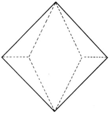
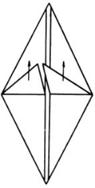
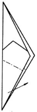
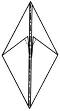
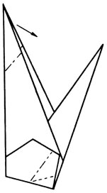
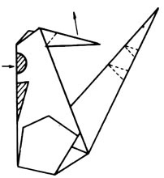
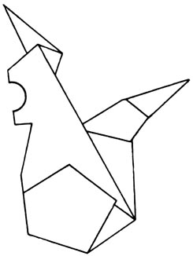
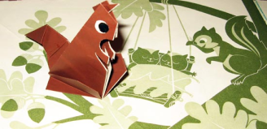

1. Начинаем складывать как показано на рисунке и переходим к рисунку 2

2. Загибаем получающиеся треугольнички вверх

3. Загибаем два треугольничка внутрь. Складываем фигурку пополам

4. Загибаем треугольник внутрь

5. Выгибаем будущую голову внутрь. Делаем на ногах складку-молнию как показано на рисунке

6. Выгибаем ушки наружу. На хвосте делаем две складки-молнии. Вырезаем заштрихованные области

7. Оригами Белка готово. Разукрашиваем, обставляем

8. Вот что получается
